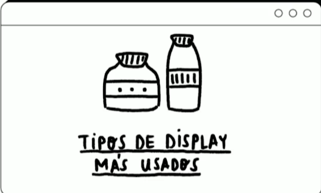
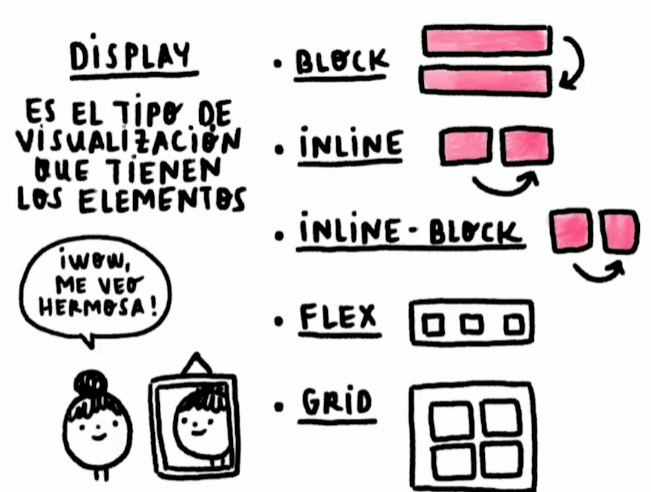

BLOQUE: Estos elementos ocupan toda la pantalla, por lo que si quieres agregar otro elemento, este se agregará automáticamente abajo. No importa que tengas poco contenido, el elemento sí o sí va a ocupar toda la pantalla.
inline: Estos elementos son los que su caja mide exactamente lo mismo que su contenido.
Estos elementos los podemos usar en textos y en lugar de que se agreguen en una nueva línea se agregaran justo al ladito del texto. ❗
Tienen como desventaja que no podemos ponerles márgenes ni tampoco podemos cambiar su tamaño.
inline-block: Esto mezcla lo mejor de ambos mundos. Con este display podemos tener tanto
los beneficios de inline como de block, es decir, podemos
tener elementos que no ocupen todo el ancho de la pantalla,
sino que ocupen solamente lo que su contenido ocupa, pero
también vamos a poder darle márgenes y podremos cambiar su
tama√±o ü§†.
Platzi
